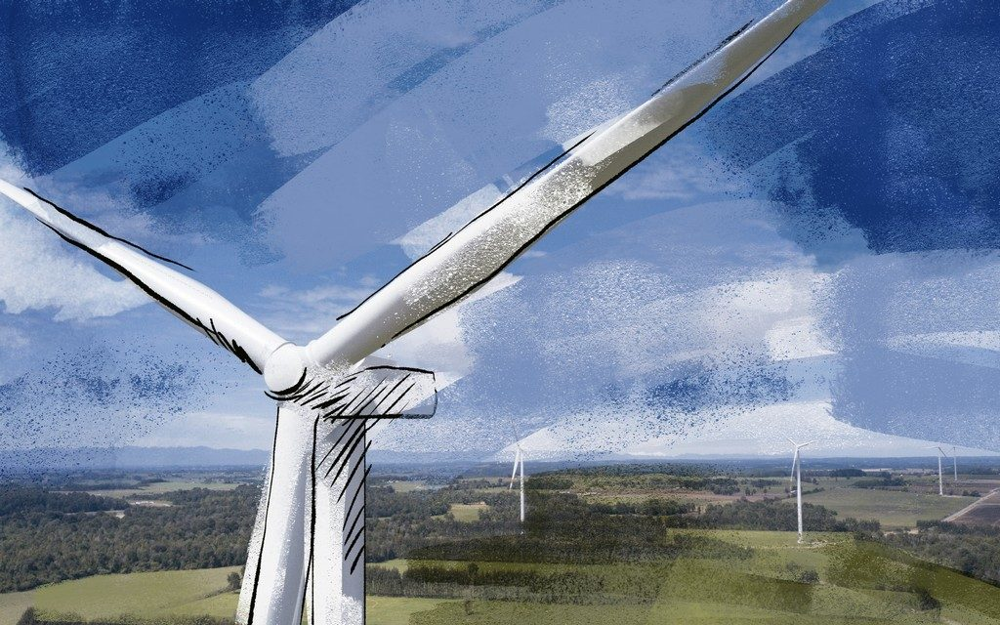

ReWind pone un gemelo digital en cada aerogenerador y reúne tu parque entero en una flota viva en 3D. Los sensores miden; la física hace el resto.

No hace falta llenar la torre de sensores. Un gemelo digital físico infiere el comportamiento de toda la estructura a partir de unas pocas medidas — incluso en los puntos donde no hay ningún sensor.
Los sensores que cada torre necesita, según lo que se quiera medir. Instalación simple, sin obra mayor.
El gemelo traduce esas dos señales en el movimiento y el estado de la torre completa.
Un estado claro por torre y la base para estimar su vida remanente.
Camán se está construyendo ahora. Instrumentamos cada torre desde la fundación —una de las etapas más sensibles: curado del hormigón, asentamiento y desplome temprano— y la acompañamos etapa por etapa: el gemelo predice cómo debería comportarse la estructura y avisa cuando lo medido se aparta de lo esperado. Y captura la huella de puesta en marcha que habilita todo el monitoreo posterior.
La desviación entre lo esperado y lo medido (○) dispara una alerta temprana.
El parque georreferenciado sobre el relieve real.
Etapas, porcentaje y estado de cada estructura, en el tiempo (4D).
Coordenadas, caminos y vista 2D estilo satélite.
El estado en puntos donde no hay ningún sensor.
Diagnóstico claro por torre y vida remanente.
Sensores y conexiones, vigilados por estado.
Proyección de sombras según el sol y control del parpadeo hacia los vecinos.
Señal, deformada y estado en un reporte listo para exportar.
Pensado para todos los actores del parque — desde quien lo diseña y lo construye hasta quien lo administra.